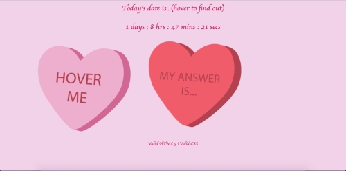
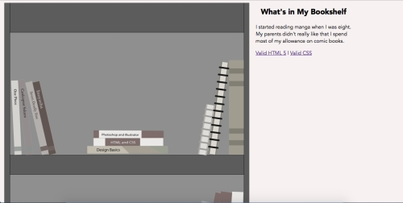

Studio 4

So the requirements was to create an interface that included
at least three counters, tooltips with mouseover, and creatively include
at least one time-based element. Since Valentine's Day was coming up,
I thought it would be a good thing to do something celebrating the holiday.
Therefore, I decided to make an interface similar to the ImageDemo exercise
we did in class the other week. I made the hearts similar to the hearts
given to us in class. The only difference is that I did not follow the usual
messages heart candies have. Part of me thought this may be funny for the user,
so I made the messages on the candies say things like "Fuck You" or "I guess" as
answers to the tooltip question the Hover Me heart will show once the user hovers over
that heart. This tooltip question is one of the three setTimeout functions we
were required to use.
As for the other two setTimeout functions, they are located in the Today's date.
When the user hovers over this, they will get today's date. The second function
is located in the counter I made that is counting down the remaining time left
of Valentine's Day. When the user hovers over that counter, the tooltip
"Until Valentine's Day is over" will appear.
Pocket Full of Interface
What's in my Bookshelf

Since the goal was about telling the audience about
ourselves, I thought this exercise was pretty easy. I decided
to do something focusing on books because I am an avid reader.
So I focused on what kind of books I buy these days. I decided to
settle on Sci-fi, manga, design, and animation books. However, I thought
simply including those would be visually boring for the
user. Therefore, I decided to include other things that might be in
my bookshelf, which were sketchbooks and plushies. I decided to go with a
Stitch plushie because I have five Stitch plushies with me.
Once I decided what visual of items to use, I made each of them in illustrator, including the bookshelf
where the items will rest. Then I copied and pasted each of the visuals onto the bookshelf. This was to arrange them
in an interesting composition, making sure the visuals were arranged in a grid because that would
allow me to size the images exactly the same. When the bookshelf was done, I converted
that image from a pdf to a png. From there, I saved the visuals of each item in the size
I calculated by 6 of the bookshelf size.
When it was time to code, I put the finished bookshelf png on first, using the position absolute
function. I used the same function on each of the item pngs. In the CSS file, I made ids for each
of the images to make sure they overlaying there positions in the bookshelf properly. Thanks to that,
I had to put each image in a p tag and size that p tag width according to the images' width. In the
js file, I created functions corresponding the ids that would effect the opacity so that when the
user's cursor hovers over the image, the image would come into its full color. Since I thought
the experience is about the items coming to alive in color, I decided to leave the background
a slight gray color and also saved the png of the bookshelf in grayscale.
After working on the bookshelf, I worked on the section that would tell the user about what
the item tells about me. I created a functions in javascript with an innerHTML that will use the id
I made called inner to insert messages based on what image the mouse will hover over. In order
make sure the user will see this message even when scrolling down, I used the position fixed method
to have the message stay in place.
CAS Login
Since I am a UC Davis student. I often go onto the server to check my UC Davis email account. This is to see if I missed any announcements regarding
classes, clubs, or events that are happening around the campus. When I was a freshman, I was really hated this page because
I often had to log into my account because the teachers of the classes I took often made announcements that would
often include the assignments made. Those announcements usually included sudden changes to the assignment (not including canceling the assignment), which I find was
inconvenient if I was mostly done with the assignment.
Putting aside my freshman immaturity, focusing the principles, in terms of clarity, the interface is clean at first glance. I do like how the most important
parts such as the logo, username, and password are the biggest elements in here. Priority is present in how the size of
the elements enforce hierarchy. Having the login button be the school colors brings about the principle of clairty in that the user is on
a UC Davis server and brings about distinction.
In terms of purpose, this distinction helps the user know that this is a login page and it is for the UC Davis students.
The fact that the informational part of the page is in smaller text serves the purpose in letting the user focus on logging into
the server.
Paletton

I use the paletton interface for whenever I have to think of a color scheme for my designs. There are several reasons why I would recommend this interface; an overall reason is that the overall design allows the user to focus on the colors and the interaction between them. This is based on the fact that the whole interface besides the color wheel and square is dark gray. In terms of function, the controls in upperleft hand corner allows the user to think of how many colors a designer can work with. One can choose monocromatic (one hue) or one can choose a tetratic (four hues) scheme. If one chooses to work with more than one color for example a triadic scheme, then the interface can allow one to change the hues by dragging the little circles along the outer ring.
However, the some of the most useful feature paletton has would be located on the right side of the picture. The dominating visual of this side of the interface is the square with multiple squares of varying sizes located at the bigger square’s corners. These smaller squares show the hue’s tints. By using this visual, a designer can analyze the interaction of colors whenever dealing with a multi-color scheme. Also, since designers have to think of how color look to people who cannot see colors the same as most people, paletton has a feature that allows the designer to see what the color-blinded people see.